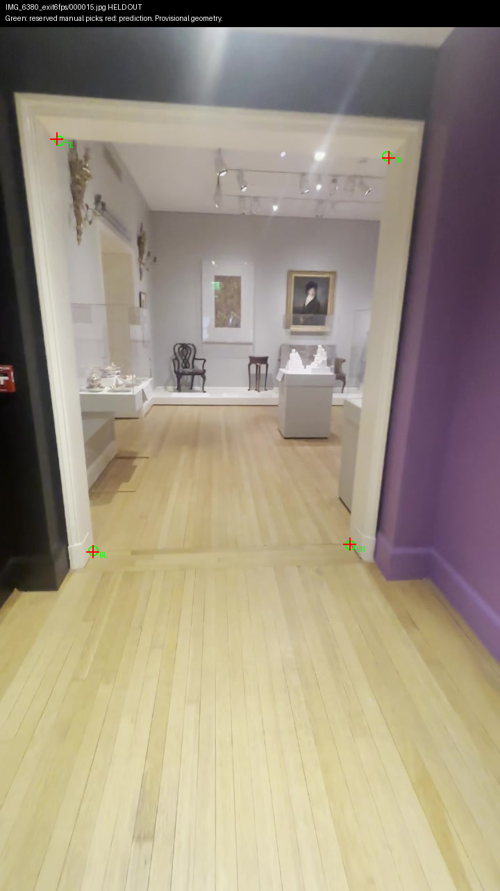
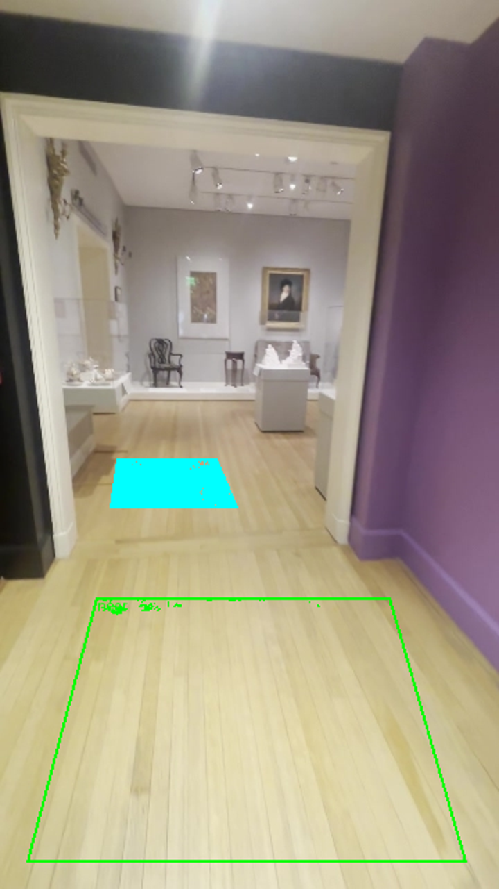
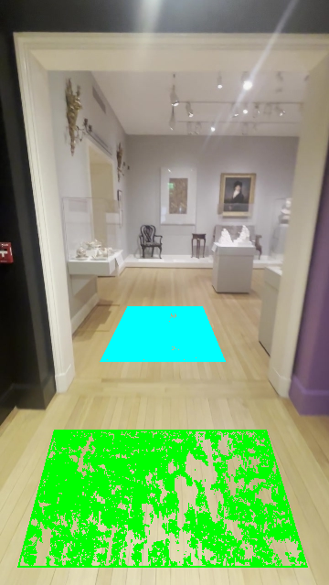

September 29, 2026, 22:00 UTC tick. Prototype only; no accepted collision floor or connected walk.
Four predicted corners within 4.11 pixels. Nearby same-video validation; older 9.18 pixel failure remains.

Green: near floor, only 0.4% valid depth. Cyan: far floor, 98.9%. Colored pixels indicate available depth, not accepted geometry.

Near floor now 66.5% covered. Separate near/far normals differ 3.96 degrees; extrapolated levels differ +5.4 / −3.8 provisional centimetres at the two jamb toes. No level-join acceptance.

Repository and diff checks pass. Shell playtest has seven failures on unchanged runtime/tests; software-rendered run, not GPU performance proof.
Shell log · Floor measurements · Doorway measurements · Provenance